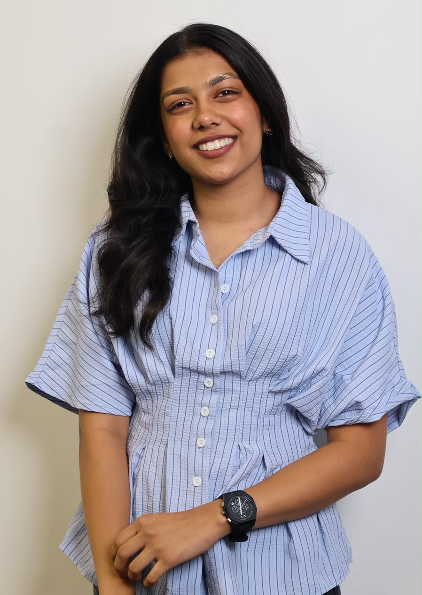

I'm learning lots of new things right now, including HTML, Java, JavaScript, and Linux commands, and I'm having fun building something new with each one. and what excites me most right now is that I can build my own website, like this one! Even writing a tiny bit of code feels fun, and I'm just getting started.

Here are some of my recent projects and the skills I've developed.
click on the buttons below to see them in action!
description: This project is a website that I built using HTML, CSS, and JavaScript. It is a simple website that allows users to create a perfect day by selecting different activities and adding them to a list. The website also has a feature that allows users to save their perfect day and share it with others.
description: This is another project I built using HTML, CSS, and JavaScript. It focuses on solving invisible problems in our daily lives.
I'm always happy to chat about code, projects or opportunities. Email me at jiyatater@gmail.com , or find me on GitHub and LinkedIn.